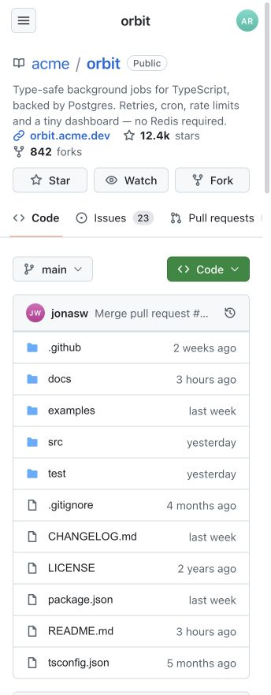
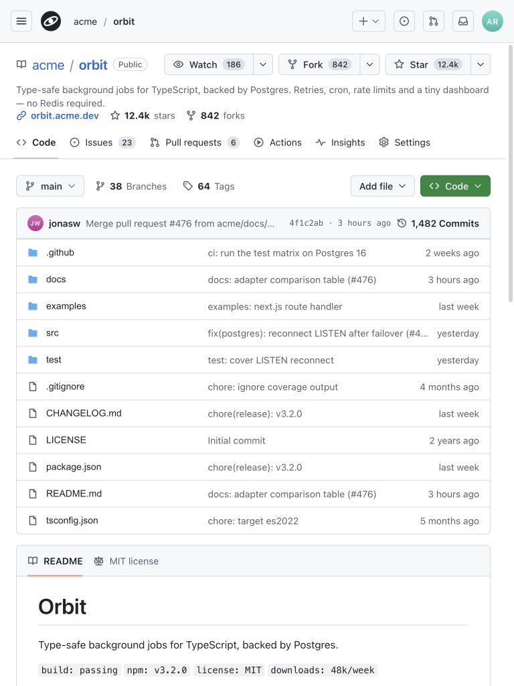
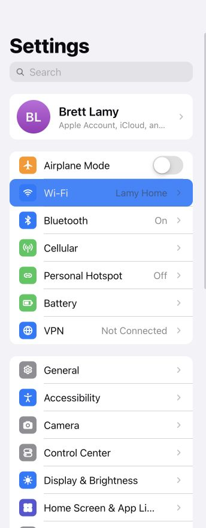
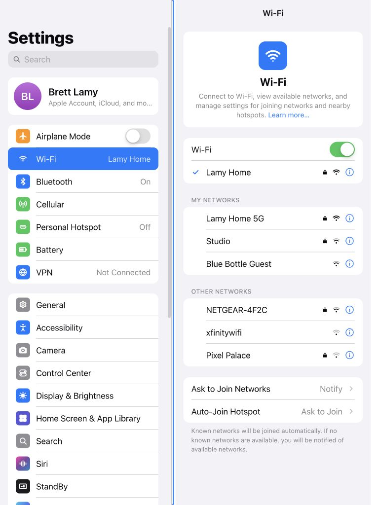
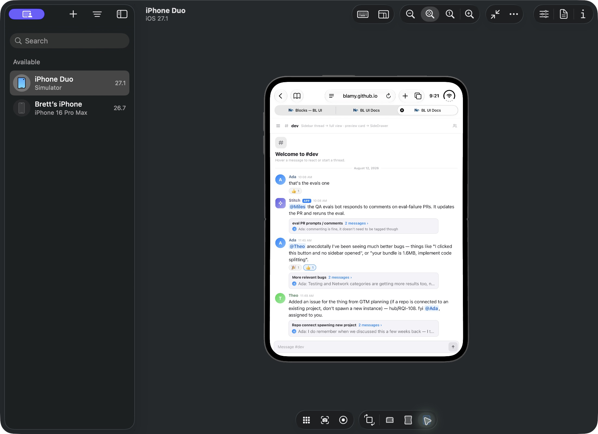
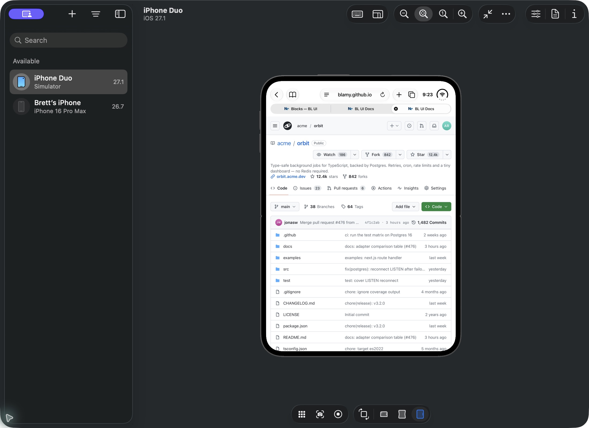

September 30, 2026. Target: https://blamy.github.io/ui/. All 18 app blocks inventoried. Browser checks used representative 344×882 and 768×1024 CSS-pixel viewports. Exact Duo screen dimensions were not established. Computer use accessed the Xcode beta Device Hub iPhone Duo on iOS 27.1 and exercised its posture controls in Safari.
Blocked: Computer use rejected further access to blamy.github.io because a saved user browser permission preference blocks the domain. No complete pass or release sign-off is claimed.
| Step | Surface | Health / coverage |
|---|---|---|
| 1 | Catalog | 18 blocks identified. |
| 2 | Discord | Readable browser wide layout and simulator rendering captured; complete interaction and exact posture-size verification unfinished. |
| 3 | GitHub | Readable narrow and wide browser layouts captured, plus Safari rendering. Repository tabs use horizontal overflow at the narrow width. |
| 4 | T3 Code, Codex, macOS, Reminders, Mail | Visited both browser widths. Some captures show transitions or incorrect dimensions and require recapture. No confirmed defect inferred from these provisional captures. |
| 5 | Settings | Readable narrow list and wide split layout captured. Long labels truncate in the narrow list. |
| 6 | Notes | Viewed in simulator; browser capture interrupted by permission block. Incomplete. |
| 7 | Passwords, Music, Loop QA, Map chat, Delivery, PencilKit, Time Machine, Freeform, SplitView compositions | Preview tabs loaded. Both-breakpoint visual inspection and interactions unfinished. |
Keyboard focus, VoiceOver, touch hit areas, software keyboard, gestures, dark appearance and state persistence across every app remain unverified. Screenshots do not establish accessibility compliance. No source code was changed.
Only images embedded below are accepted report evidence. Other captures are provisional; their filenames do not certify the app or dimensions shown.
GitHub narrow

GitHub wide

Settings narrow

Settings wide

Discord in Safari after exercising posture controls; exact screen size unverified.

GitHub in Safari.
